テ ク ノ マ キ と は
「テクノマキ」は、宮城県石巻市を拠点に
テクノロジー技術の学びの場をつくるプロジェクトです。
説明文はあとでかんがえますから。かんがえますからに。
とりあえず簡潔に。そう、簡潔に！
テクノマキ発端の理由とか。とかとかとか。うふふ。
想いみたいなのを、ここに綴って欠けたらいいなあって感じ。
うふふあははうふふ！ててれててーーーーーーーーーん！！！！！！

3つのプラン
|  初心者〜上級者まで |
 古民家などを活用し、 |
 データの使用や |
イ ベ ン ト 情 報
copyrights© 2016 itnav.inc